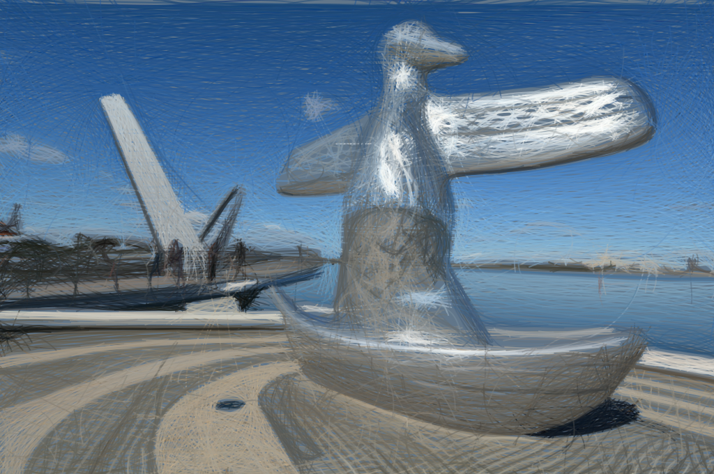
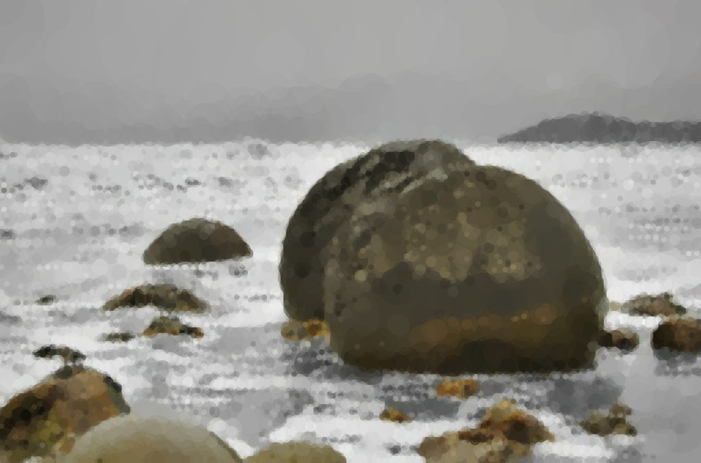
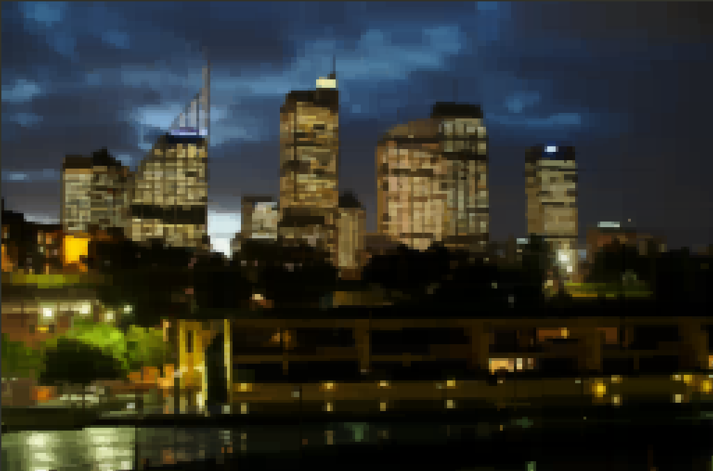

1
New Holland Honeyeater
Rendered with 3000 ellipses, 26kB

2
Elizabeth Quay, Perth
Rendered with 5000 bezier curves, 125kB

3
Moeraki Boulders
Rendered with 4000 circles, 31kB

4
Sydney Skyline
Rendered with 3000 rectangles, 29kB
